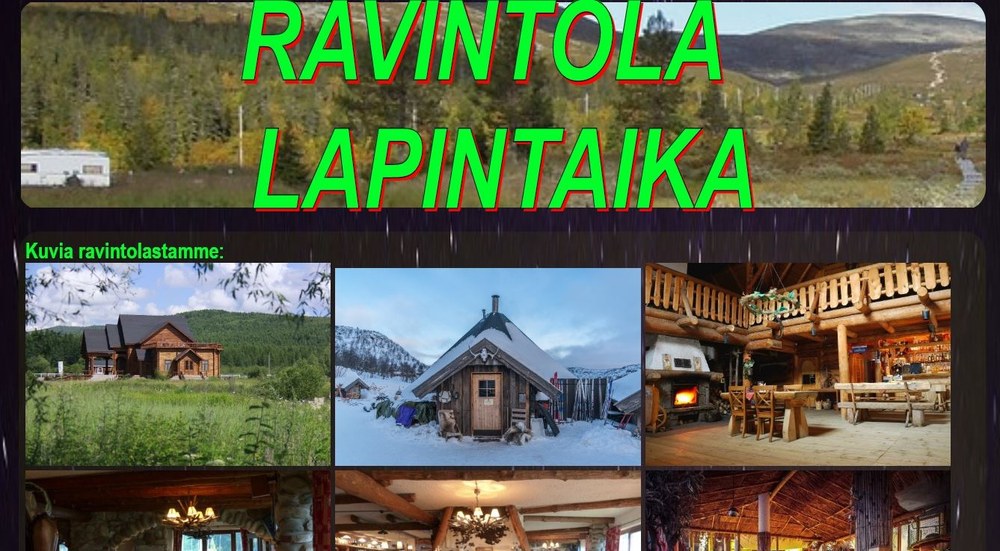
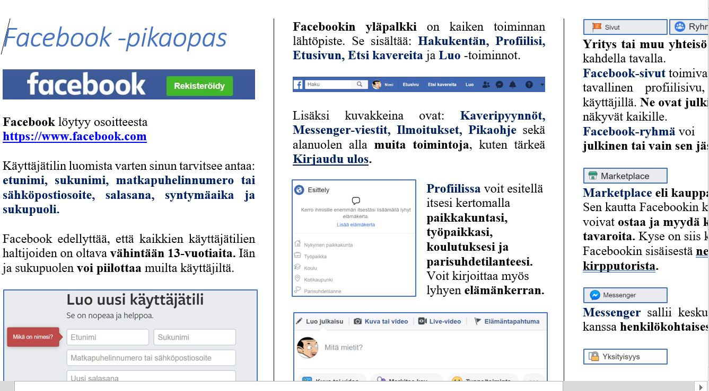
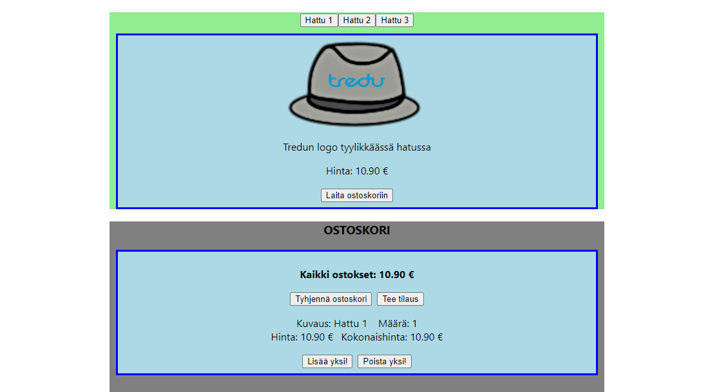

Harjoitustyö 1
Tässä pikainen html harjoitustyö, jossa esitellään 3 maata: Kolumbia, Irlanti ja Jemen
Täällä Maat

Harjoitustyö 2
Tässä Gridiä ja Flexboxia yhdistelevä harjoitus, jossa esitellään fiktiivinen ravintola
Täällä Ravintola

Harjoitustyö 3
Tässä harjoituksessa tein Wordilla pikaoppaan Facebookin käytöstä ja tallensin sen PDF:nä
Täällä FB-pikaopas

Harjoitustyö 4
Tässä harjoituksessa tein Reactilla kuvitteellisen verkkokaupan Tredun hatuista
Fanikauppa (react)